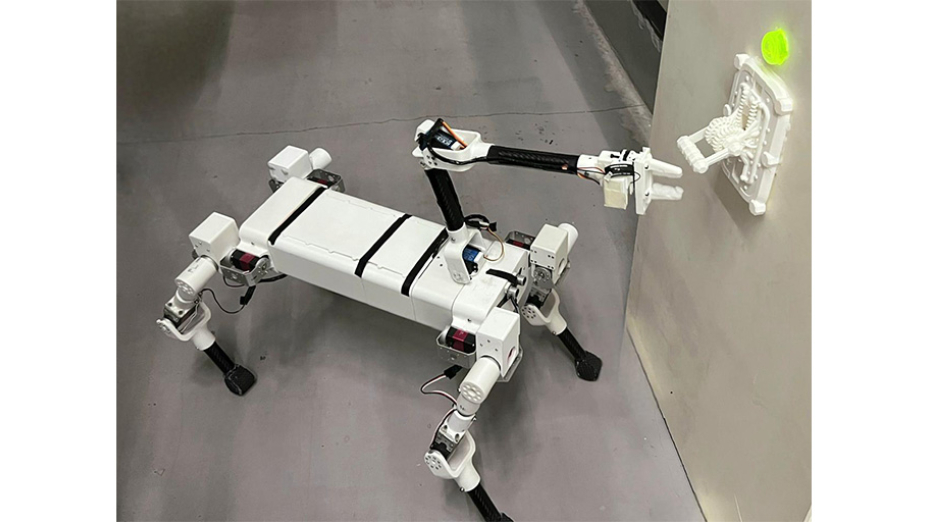

B.Sc. Thesis · Final Year Design Project · BRAC University · 2026
A quadruped robot for real-time inspection and responsive operations
Abstract
Industrial inspection in hazardous environments such as chemical plants, oil and gas facilities, power systems, and nuclear sites poses significant risks to human workers due to exposure to toxic gases, extreme temperatures, high voltage, and confined spaces. To address these challenges, this project presents the design and implementation of a quadrupedal robot capable of performing real-time inspection and responsive operations with minimal human intervention. The robot integrates a multi-sensor inspection framework for detecting structural and operational abnormalities, with particular focus on identifying surface cracks, microcracks or other early signs of equipment degradation. The system architecture combines a legged mobility platform, onboard computing unit, wireless communication module, and sensor suite including camera, ultrasonic, and IR-based sensing components. These subsystems enable the robot to collect and transmit real-time inspection data to operators for rapid monitoring and decision-making. In addition to routine inspection, the robot is also equipped with a manipulation mechanism for limited emergency operations such as operating switches or mechanical levers when direct human access is not feasible. The quadruped structure provides greater adaptability than conventional wheeled or tracked platforms in stairs, narrow passages, and uneven surfaces, making it more suitable for industrial inspection scenarios. This study addresses key limitations in existing inspection systems, including limited autonomy, infrastructure dependency, and high operational costs, by proposing a modular, cost-effective, and energy-efficient design. Experimental analysis demonstrates that the system can perform reliable inspections while reducing human exposure to hazardous environments. By enabling real-time crack and microcrack detection alongside general hazard inspection, the system supports predictive maintenance, reduces unplanned downtime, and improves worker safety. Overall, this work contributes a modular and practical robotic solution aligned with the growing industrial demand for intelligent, autonomous, and inspection-centric systems.
Keywords
Quadruped inspection robot; autonomous industrial inspection; microcrack detection; hazardous environment robotics; worker safety.


Project video

Open in BRAC University repository ↗
Handle 10361/28275